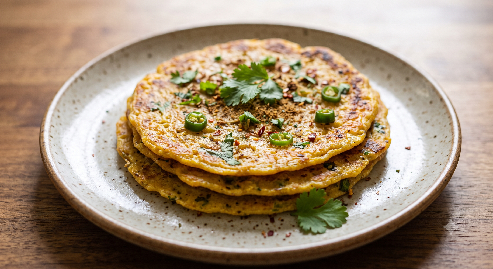

Moong Dal Chilla

Makes : 6-8 chillas
Time : 30-40 minutes
Ingredients :
- 1 cup yellow or green moong dal
- 1 small onion, finely chopped
- 1 small tomato, finely chopped
- 1 green chilli, finely chopped
- 1 tsp grated ginger
- 2 tbsp coriander, chopped
- 1/2 tsp cumin
- 1/4 tsp turmeric
- 1/2 tsp red chilli powder
- Salt to taste
- Water as needed
- Oil or ghee for cooking
Optional Filling
- Grated paneer
- Grated cheese
- Finely chopped vegetables
Method :
- Wash the moong dal thoroughly.
- Soak the moong dal in plenty of water for 3-4 hours.
- Drain the water completely.
- Add the soaked dal to a blender.
- Add a small amount of water and blend into a smooth, slightly thick batter.
- Transfer the batter to a bowl.
- Add onion, tomato, green chilli, ginger, coriander, cumin, turmeric, red chilli powder, and salt.
- Mix everything well.
- Heat a non-stick or well-seasoned iron pan.
- Lightly grease the pan with oil or ghee.
- Pour approximately 1/4 cup batter onto the center of the pan.
- Spread the batter outward in a circular motion to make a thin pancake.
- Drizzle a little oil around the edges.
- Cook for about 2 minutes until the bottom becomes golden.
- Flip the chilla carefully.
- Cook the other side for about 1 minute.
- Remove from the pan and repeat with the remaining batter.
For the Paneer Filling
- Spread the chilla batter on the hot pan.
- Sprinkle grated paneer over the surface.
- Add a little black pepper and chaat masala.
- Fold the chilla in half.
- Cook for another minute.
Tip: If the chilla breaks while flipping, the batter may be too thin. Add a little rice flour or
besan to make the batter slightly thicker.